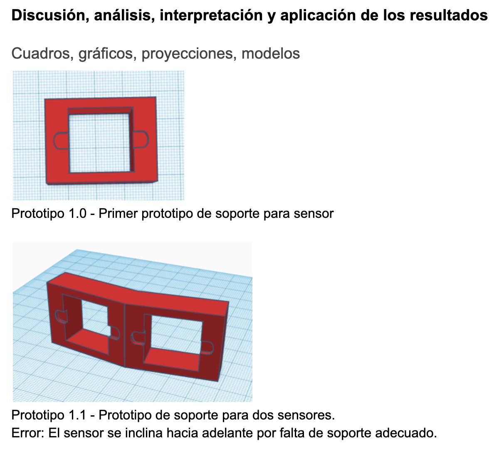
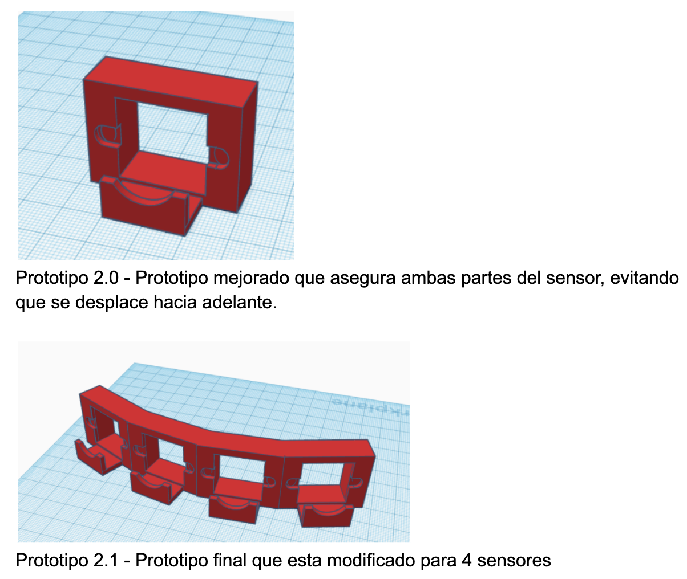

Informe
Resumen
Aproximadamente 338 millones de personas a nivel mundial presentan problemas de visión severos.
Estas personas enfrentan desafíos significativos al salir de sus casas, ya que el mundo está diseñado para quienes pueden ver.
Para ayudar a mejorar la calidad de vida de estas personas, hemos desarrollado un Sistema Integrado de Percepción y Respuesta Auditiva para Discapacitados Visuales (SIPRADV).
SIPRADV detecta y alerta al usuario de la presencia de objetos en la periferia mejorando así la percepción del entorno.
Lo que permite a las personas con discapacidad visual desplazarse de manera más segura y autónoma.
El SIPRADV no fue suficiente para nosotros por lo que decidimos mejorarlo e integrarle mejor tecnología a través de mejoras en el controlador,
una nueva forma de detectar objetos de manera que no solo podamos saber que el objeto existe si no que es ese objeto.
Todo esto a través de una cámara. Dándole vida a la versión 2.0.
Pregunta de investigación
¿Cómo podemos mejorar el SIPRADV para convertirlo en un sistema con mayor utilidad y eficiencia utilizando el reconocimiento de imágenes?
Marco Teórico
1. Percepción Espacial en Personas No videntes La percepción espacial es fundamental para la movilidad y la orientación en el entorno. En personas no videntes, esta percepción se basa en gran medida en otros sentidos, como el oído, para formar un mapa mental del entorno. La investigación ha demostrado que las personas no videntes desarrollan una aguda capacidad para detectar y localizar sonidos, lo que les ayuda a navegar y evitar obstáculos. (Tactile, 2018)
2. Tecnologías Asistidas para la Movilidad Las tecnologías asistidas han avanzado significativamente en las últimas décadas, ofreciendo nuevas formas de apoyo para las personas con discapacidades visuales. Sistemas como los bastones electrónicos y dispositivos de navegación portátiles ayudan a mejorar la independencia y seguridad. Sin embargo, la integración de múltiples tecnologías, como sensores ultrasónicos y retroalimentación auditiva, puede ofrecer una solución más eficaz y personalizada. (Smith & Johnson, 2020).
3. Sensores Ultrasónicos en Tecnología de Asistencia Los sensores ultrasónicos, como el GY-US42V2, son dispositivos que utilizan ondas sonoras de alta frecuencia para medir distancias y detectar la presencia de objetos. Estos sensores ofrecen ventajas sobre las tecnologías más antiguas al proporcionar una mayor precisión y capacidad de medición en diferentes condiciones. Los modelos avanzados, como el GY-US42V2, ofrecen opciones de comunicación como UART y PWM, lo que mejora la integración con sistemas electrónicos complejos. (Lee et al., 2022)
4. Audio Espacial y Feedback Auditivo El audio espacial es una técnica que utiliza múltiples fuentes de sonido para crear una experiencia auditiva tridimensional. En el contexto de la asistencia a personas ciegas, el audio espacial puede proporcionar información sobre la dirección y la proximidad de los objetos, permitiendo una navegación más intuitiva. El uso de sistemas de audio direccional puede mejorar la capacidad de una persona para localizar obstáculos y adaptarse a su entorno con mayor facilidad. (Miller, 2019)
5. Integración de Sensores y Sistemas de Audio en Dispositivos de Asistencia La integración de sensores ultrasónicos con sistemas de audio espacial puede ofrecer un enfoque más eficaz para la navegación asistida. Al combinar la detección precisa de obstáculos con la retroalimentación auditiva direccional, se puede proporcionar a las personas ciegas una percepción más clara de su entorno. Este enfoque combina la tecnología de sensores avanzados con técnicas de retroalimentación auditiva para crear una solución de asistencia más completa y funcional. (Wang & Chen, 2021).
6. Cámaras Digitales Las cámaras digitales son dispositivos electrónicos que capturan imágenes en formato digital mediante sensores electrónicos, generalmente sensores CCD (Charge Coupled Device) o CMOS (Complementary Metal Oxide Semiconductor). Estas imágenes se utilizan como datos de entrada para sistemas de procesamiento y análisis visual. Funcionamiento básico: La cámara convierte la luz capturada a través del lente en señales eléctricas, que luego se digitalizan para formar una imagen. Tipos de cámaras usadas: Webcams, cámaras IP, cámaras industriales, cámaras móviles, entre otras, que varían en resolución, velocidad de captura y sensibilidad.
7. Reconocimiento de Objetos El reconocimiento de objetos es una subárea del campo de la visión por computadora e inteligencia artificial que busca identificar y clasificar objetos presentes en imágenes o videos. Definición: Consiste en localizar y etiquetar objetos de interés dentro de una imagen o secuencia de imágenes. Aplicaciones: Seguridad, robótica, vehículos autónomos, sistemas de monitoreo, realidad aumentada, diagnóstico médico, entre otros.
8. Procesamiento de la Imagen El proceso típico para el reconocimiento de objetos incluye: Captura de imagen: Mediante cámara digital. Preprocesamiento: Mejoras en la calidad de imagen, reducción de ruido, normalización. Detección: Localización aproximada del objeto dentro de la imagen. Clasificación: Asignación de una etiqueta o categoría al objeto detectado. Post procesamiento: Refinamiento, eliminación de falsos positivos y presentación de resultados.
9. Contexto nacional En Panamá, la Universidad Tecnológica de Panamá (UTP) ha sido pionera en la investigación y desarrollo de tecnologías de asistencia para personas con discapacidad visual. Un estudio relevante llevado a cabo en la UTP exploró el uso de dispositivos de detección de obstáculos basados en inteligencia artificial. Los resultados de este estudio fueron prometedores, demostrando la eficacia de la tecnología en la identificación y alerta de obstáculos en tiempo real. Sin embargo, el estudio también identificó un desafío importante: el tamaño del dispositivo. Los prototipos desarrollados, aunque funcionales, eran voluminosos y afectan la comodidad de los usuarios durante su uso prolongado. Esta limitación resalta la necesidad de continuar la investigación y desarrollo en esta área, con un enfoque particular en la miniaturización y ergonomía de los dispositivos, para garantizar una experiencia de usuario óptima. (Rodríguez, 2023)
Hipótesis
La implementación de un sistema de detección de obstáculos basado en sensores ultrasónicos avanzados (GY-US42V2) y audio espacial direccional en dispositivos de asistencia para personas ciegas, permitirá mejorar significativamente su percepción espacial y reducir la incidencia de colisiones.
Metodología
Materiales Necesarios:- 1 - Raspberry Pi 5
- 1 - Cooling case
- 1 - 128 GB Memory
- 1 - Raspberry Pi 5 Charger
- 1 - Speaker
- 1 - Headphones
- 1 - 30,000 mAh power bank
- 1 - Google Coral USB
- 1 - Webcam C270 Logitech
- Alimentar el Arduino Nano conectando la batería al pin Vin y GND.
- Asegúrate de que todos los componentes comparten una conexión a GND para un circuito común.
- Conectar el pin VCC de cada sensor al pin 5V del Arduino Nano.
- Conectar el pin GND de cada sensor al pin GND del Arduino Nano.
- Para la comunicación UART, conectar los pines TX de los sensores al pin RX (D0) del Arduino Nano, y los pines RX de los sensores al pin TX (D1) del Arduino Nano.
- Si es necesario, añadir resistencias o un divisor de voltaje en las líneas de UART para estabilizar la señal.
- Conectar el pin VCC del DFPlayer Mini al pin 5V del Arduino Nano.
- Conectar el pin GND del DFPlayer Mini al pin GND del Arduino Nano.
- Conectar el pin RX del DFPlayer Mini al pin digital D6 del Arduino Nano para la comunicación en serie.
- Conectar los pines de salida de audio SPK+ y SPK- a los dos mini altavoces.
- Conectar el ánodo (pata larga) de cada LED a los pines digitales D2, D3, D4 y D5 del Arduino Nano.
- Conectar una resistencia de 220Ω en serie entre cada ánodo de LED y el pin del Arduino para limitar la corriente.
- Conectar el cátodo (pata corta) de cada LED a GND.
- Escribir el código para que el Arduino Nano reciba datos de los sensores GY-US42V2 y controle los LEDs según la distancia detectada.
- Añadir la lógica para que el DFPlayer Mini reproduzca un sonido si los sensores detectan un objeto en una distancia menor a un umbral específico (por ejemplo, 20 cm).
- Asegurarse de que los LEDs enciendan cuando los sensores detecten objetos, proporcionando una indicación visual de que los sensores están funcionando correctamente.
- Alimentar el circuito y verificar que los sensores GY-US42V2 funcionan correctamente midiendo distancias.
- Probar los LEDs para asegurarse de que se encienden cuando un objeto es detectado dentro del rango especificado.
- Probar el DFPlayer Mini para asegurarse de que reproduce el sonido desde los altavoces cuando se detecta un objeto cercano.
- Ajustar la programación o las conexiones según los resultados de las pruebas.
- Si es necesario, ajustar las posiciones de los sensores para evitar interferencias o mejorar la precisión de la detección.
- Verificar el rendimiento de la batería y optimizar el consumo de energía si es posible.
Se implementaron diversos códigos, con resultados variables. Se probaron diferentes métodos, cada uno con su correspondiente código (todos los códigos se encuentran en el anexo).
 


Conclusiones y recomendaciones
Con el uso de un Arduino Nano, sensores ultrasónicos y un reproductor de música, se desarrolló un prototipo funcional diseñado para asistir a personas con discapacidad. Este dispositivo facilita la detección de obstáculos y proporciona retroalimentación auditiva, contribuyendo a mejorar su movilidad y seguridad.
Con base en los resultados obtenidos, se proponen las siguientes recomendaciones para mejorar el prototipo y su funcionalidad:
Evaluación de sensores:Comparar el rendimiento entre los sensores HC-SR04 y GY-US42V2 para determinar cuál se adapta mejor al proyecto.
Uso del modo UART:Priorizar el modo UART en los sensores GY-US42V2 sobre PWM o I2C para mejorar la estabilidad y transmisión de datos.
Fuente de energía:Seleccionar la mejor fuente de energía en función del consumo total del proyecto, considerando opciones como baterías recargables o LIPO.
Optimización del sistema de sonido:Implementar retroalimentación auditiva con distintos tonos o volúmenes según la proximidad de los obstáculos.
Spacial audio:Incorporar sonido direccional, de manera que el usuario reciba la señal auditiva desde la dirección en que se detecta un obstáculo.
Reducción de tamaño y peso:Diseñar una carcasa más compacta para facilitar el uso del dispositivo.
Pruebas en distintos entornos:Realizar pruebas en diversas condiciones para asegurar un rendimiento confiable en diferentes situaciones.
Compatibilidad:Explorar la integración con otros dispositivos de asistencia para aumentar su versatilidad.
Referencias bibliográficas
- Lee, J., Smith, R., & Johnson, T. (2022). Advances in Ultrasonic Sensor Technology. Journal of Assistive Technologies.
- Miller, A. (2019). Spatial Audio for Accessibility. Audio Engineering Society.
- Smith, K., & Johnson, M. (2020). Technological Innovations in Mobility Assistance for the Visually Impaired. Disability and Rehabilitation.
- Tactile, R. (2018). Exploring Spatial Perception in Individuals with Visual Impairments. Journal of Visual Impairment & Blindness.
- Wang, X., & Chen, Y. (2021). Integrating Sensor and Audio Feedback Systems for Enhanced Navigation. IEEE Transactions on Human-Machine Systems.